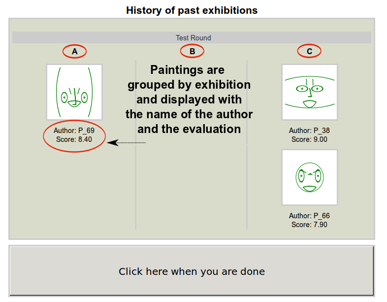
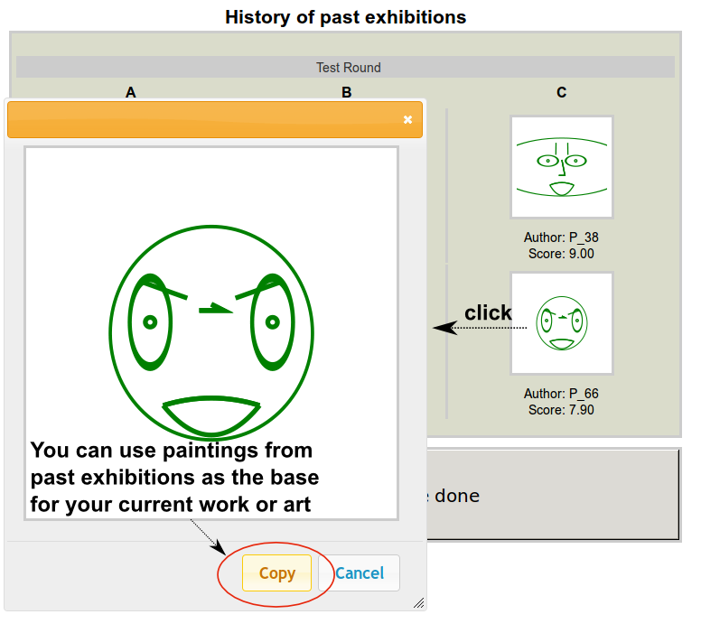

Welcome to the Art Exhibition Game!
 (Scroll the page to read the whole text)
(Scroll the page to read the whole text)
Introduction
You just became part of a community of 9 painters (including you). The goal of the community is to collectively decide which paintings can be exposed in 3 (three) artistic exhibitions (named A, B, or C). The three exhibitions have all the same value for the members of the community.Remember: In this game you will act both as an artist and as an art critic.
The game
The game is divided in rounds, and each round is divided in three steps:- Step 1: Each player creates 1 (one) painting, and submits it to one of three exhibitions.
- Step 2: Each player reviews 3 (three) of the 8 (eight) paintings produced by the other artists. The review is done by assigning a rating on a scale from 1 (one) to 9 (nine) to each painting. Self review is not allowed.
- Step 3: All the paintings that received an average review-score greater than 7 (seven) are put on display in the exhibition to which they were submitted.
Other rules
- You have a limited amout of time to complete each step of the game. The time left will be displayed on the screen.
- At each new round, when creating a new painting, you will continue from your last submission.
- You are allowed to use any painting from the past exhibitions as a base for your next creation.
Payment
- For participating in the game you will receive a fixed monetary compensation of 20 CHF, plus a variable amount based on your performance in the game
- For each painting of yours that is displayed in one of the exhibitions you will be paid 0.75 CHF.
- For each painting of yours that is not put on display you will receive 0 (zero) CHF.
- In case of misconduct, cheating or disturbing behavior during the game, you will not be paid any money.
Termination
- The game will ends either after 50 (fifty) rounds, or after 1 hour of playing.
Graphical examples of the interface to create paintings
-
Each player produces his or her paintings by moving a set of sliders as illustrated in the picture below.

- During the creation of the painting, each player is provided with the an overview of the past exhibitions. 
- Players can click on a painting to display it in its original dimensions. Furthermore, during the creation phase, it is allowed to select a past painting as the base of the current work of art. 